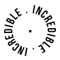

SERENE SKY | 10 MIN READ
I am an observer of life, who see meanings in worst cases of sufferings. Somehow, people turn their lives shitty, but indeed, there's a lot hidden and we're not able to see it. I'm goin' to write blogs about life advices what I found, the meaning and how to avoid those sufferings which are worthless. Advices, which are purely based on science, observation and practically possible to do. There's no shit I would be sharing here, if that doesn't apply to me.
Do check the BLOG section from the menu bar, and read it, then ask yourself, "Was that worth reading?". If yes, then do appreciate the work.

This is going to be -
